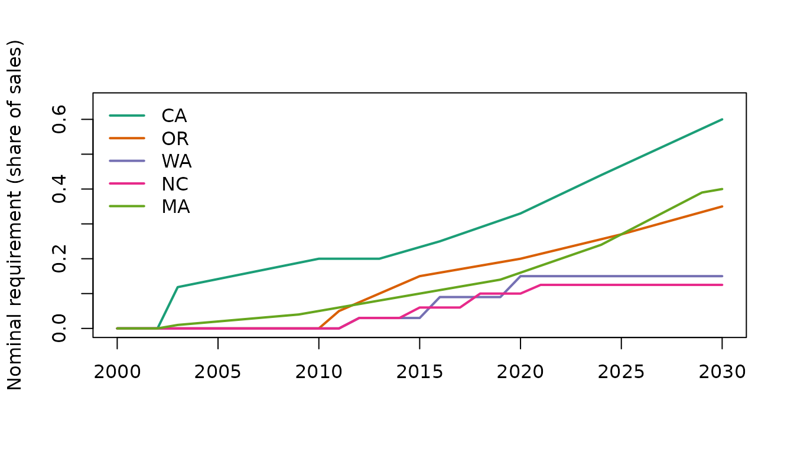

Many studies code a Renewable Portfolio Standard (RPS) as a yes/no
dummy. Real policies differ in targets, timelines, covered utilities,
eligible resources, carve-outs and out-of-state flexibility.
rps_stringency() turns coded rules into comparable annual
measures.
The rule coding
rules <- rps_rules()
rules
#> <rps_rules>: 51 coded states (33 with an RPS), 273 legal targets
#> state enacted_year first_compliance_year target_type final_target
#> AZ 2006 2006 share 0.15
#> CA 2002 2003 share 0.6
#> CO 2004 2007 share 0.3
#> CT 1998 2001 share 0.29
#> DC 2005 2007 share 1
#> DE 2005 2007 share 0.4
#> HI 2004 2005 share 1
#> IA 1983 1983 capacity_mw 105
#> IL 2007 2008 share 0.5
#> KS 2009 2011 share 0.0726
#> MA 1997 2003 share 0.4
#> MD 2004 2006 share 0.5
#> ME 1997 2000 share 0.6
#> MI 2008 2012 share 0.6
#> MN 2007 2010 share 0.55
#> MO 2008 2011 share 0.15
#> MT 2005 2008 share 0.15
#> NC 2007 2012 share 0.125
#> NH 2007 2008 share 0.157
#> NJ 1999 2002 share 0.5
#> NM 2004 2006 share 0.8
#> NV 1997 2003 share 0.5
#> NY 2004 2006 share 0.7
#> OH 2008 2009 share 0.085
#> OR 2007 2011 share 0.5
#> PA 2004 2007 share 0.08
#> RI 2004 2007 share 0.98
#> TX 1999 2002 capacity_mw 5880
#> VA 2020 2021 share 1
#> VT 2015 2017 share 1
#> WA 2006 2012 share 0.15
#> WI 1999 2006 share 0.1
#> WV 2009 2015 share 0.25
#> final_target_year coverage_share
#> 2025 0.589
#> 2030 0.985
#> 2020 0.990
#> 2030 1.000
#> 2032 1.000
#> 2035 0.918
#> 2045 1.000
#> 1983 0.862
#> 2040 0.929
#> 2014 0.825
#> 2030 0.887
#> 2030 0.980
#> 2040 0.956
#> 2035 1.000
#> 2035 0.999
#> 2021 0.726
#> 2015 0.742
#> 2021 0.998
#> 2025 1.000
#> 2030 0.990
#> 2040 0.902
#> 2030 0.929
#> 2030 0.983
#> 2026 0.734
#> 2040 0.808
#> 2021 0.976
#> 2033 0.991
#> 2015 0.757
#> 2045 0.722
#> 2035 1.000
#> 2020 0.874
#> 2015 1.000
#> 2025 0.994
head(rules$targets)
#> state year target
#> 1 AZ 2006 0.0125
#> 2 AZ 2009 0.0200
#> 3 AZ 2010 0.0250
#> 4 AZ 2015 0.0500
#> 5 AZ 2025 0.1500
#> 6 CA 2003 0.1185Each RPS state has one row in rules$rules (enactment and
first compliance year, target type, coverage share, design features,
sources and notes) and one row per legal target in
rules$targets. States missing from the coding are not
yet coded, and get NA rather than zero.
Status. The bundled coding covers all 50 states and DC. Rows marked
verified = TRUEhave been checked against the statute, the DSIRE program page and the LBNL RPS & CES data, with sources in thesourceandnotescolumns. Single-number simplifications (one coverage share, one schedule for states with utility-specific targets) are described innotes. Please report corrections. You can supply your own coding withrps_rules(rules_path = ..., targets_path = ...).
Methods
| method | column(s) | definition |
|---|---|---|
adoption |
rps_adoption |
1 if an RPS is in force |
nominal |
rps_nominal |
required share of sales, interpolated between legal targets |
coverage_adjusted |
rps_coverage_adj |
nominal x share of sales covered |
incremental |
rps_incremental, rps_baseline_share
|
coverage-adjusted requirement minus the existing renewable share at enactment (Yin and Powers 2010) |
flexibility |
rps_oos_rec, rps_carveout,
rps_acp
|
design indicators while an RPS is in force |
s <- rps_stringency(2000:2030, states = c("CA", "OR", "WA", "NC", "MA"))
head(s[s$state == "OR", ], 15)
#> state year rps_adoption rps_nominal rps_coverage_adj rps_incremental
#> 94 OR 2000 0 0.000 0.0000 0
#> 95 OR 2001 0 0.000 0.0000 0
#> 96 OR 2002 0 0.000 0.0000 0
#> 97 OR 2003 0 0.000 0.0000 0
#> 98 OR 2004 0 0.000 0.0000 0
#> 99 OR 2005 0 0.000 0.0000 0
#> 100 OR 2006 0 0.000 0.0000 0
#> 101 OR 2007 1 0.000 0.0000 0
#> 102 OR 2008 1 0.000 0.0000 0
#> 103 OR 2009 1 0.000 0.0000 0
#> 104 OR 2010 1 0.000 0.0000 0
#> 105 OR 2011 1 0.050 0.0404 NA
#> 106 OR 2012 1 0.075 0.0606 NA
#> 107 OR 2013 1 0.100 0.0808 NA
#> 108 OR 2014 1 0.125 0.1010 NA
#> rps_baseline_share rps_oos_rec rps_carveout rps_acp
#> 94 NA 0 0 0
#> 95 NA 0 0 0
#> 96 NA 0 0 0
#> 97 NA 0 0 0
#> 98 NA 0 0 0
#> 99 NA 0 0 0
#> 100 NA 0 0 0
#> 101 NA 1 1 1
#> 102 NA 1 1 1
#> 103 NA 1 1 1
#> 104 NA 1 1 1
#> 105 NA 1 1 1
#> 106 NA 1 1 1
#> 107 NA 1 1 1
#> 108 NA 1 1 1Linear or step interpolation
Legal schedules often step (for example Washington: 3% from 2012, 9%
from 2016, 15% from 2020). interpolation = "step" follows
the schedule exactly; "linear" (the default) spreads the
ramp evenly between target years.
lin <- rps_stringency(2010:2022, "WA", method = "nominal")
step <- rps_stringency(2010:2022, "WA", method = "nominal",
interpolation = "step")
plot(lin$year, lin$rps_nominal, type = "l", ylab = "Required share", xlab = "",
main = "Washington RPS")
lines(step$year, step$rps_nominal, type = "s", lty = 2)
legend("topleft", c("linear", "step"), lty = 1:2, bty = "n")Nominal requirements across states
cols <- c(CA = "#1b9e77", OR = "#d95f02", WA = "#7570b3", NC = "#e7298a",
MA = "#66a61e")
plot(NA, xlim = c(2000, 2030), ylim = c(0, 0.65), xlab = "",
ylab = "Nominal requirement (share of sales)")
for (st in names(cols)) {
d <- s[s$state == st, ]
lines(d$year, d$rps_nominal, col = cols[st], lwd = 2)
}
legend("topleft", names(cols), col = cols, lwd = 2, bty = "n")
Incremental requirement
The incremental measure subtracts what the state already produced
when it enacted the standard, separating new pressure from existing
renewables. build_panel() fills the baseline from EIA
generation data: the renewable share in the enactment year (or the first
later year with data), measured the same way as the target. For New
York, whose targets count existing hydro, the baseline includes hydro
(about 19% in 2004, close to the 19.3% written into its RPS order);
elsewhere it is the non-hydro share. A generation-based baseline is a
weak guide for states that import most of their electricity, such as
Vermont. You can always pass your own baseline:
base <- data.frame(state = c("CA", "OR"), baseline_share = c(0.11, 0.03))
inc <- rps_stringency(c(2010, 2020, 2030), c("CA", "OR"),
method = c("coverage_adjusted", "incremental"),
baseline = base)
inc
#> state year rps_coverage_adj rps_incremental rps_baseline_share
#> 1 CA 2010 0.19700 0.08700 0.11
#> 2 CA 2020 0.32505 0.21505 0.11
#> 3 CA 2030 0.59100 0.48100 0.11
#> 4 OR 2010 0.00000 0.00000 0.03
#> 5 OR 2020 0.16160 0.13160 0.03
#> 6 OR 2030 0.28280 0.25280 0.03OR has NA coverage-adjusted and incremental
values because its coverage share is not yet coded.
Capacity-based standards (Texas and Iowa)
Texas and Iowa set their standards in megawatts rather than as a
share of sales. rps_stringency() converts them, like
Berkeley Lab does, into the share of covered sales the capacity would
supply: MW x capacity factor x 8,760 hours / covered sales.
The capacity factor defaults to 0.33 (typical of wind) and can be
changed. build_panel() supplies retail sales automatically;
with rps_stringency() you pass them:
tx_sales <- data.frame(state = "TX", year = c(2010, 2015),
sales_gwh = c(358000, 380000))
rps_stringency(c(2010, 2015), "TX", method = "nominal", sales = tx_sales)
#> state year rps_nominal
#> 1 TX 2010 0.04019296
#> 2 TX 2015 0.05909026
rps_stringency(c(2010, 2015), "TX", method = "nominal", sales = tx_sales,
capacity_factor = 0.4)
#> state year rps_nominal
#> 1 TX 2010 0.04871874
#> 2 TX 2015 0.07162456A template for Yin and Powers (2010)-style regressions
Yin and Powers (2010) regress the non-hydro renewable share of generation on the incremental requirement with state and year fixed effects. The template below shows the workflow; it is not a replication, because their sample, coding and controls differ from the bundled starter coding.